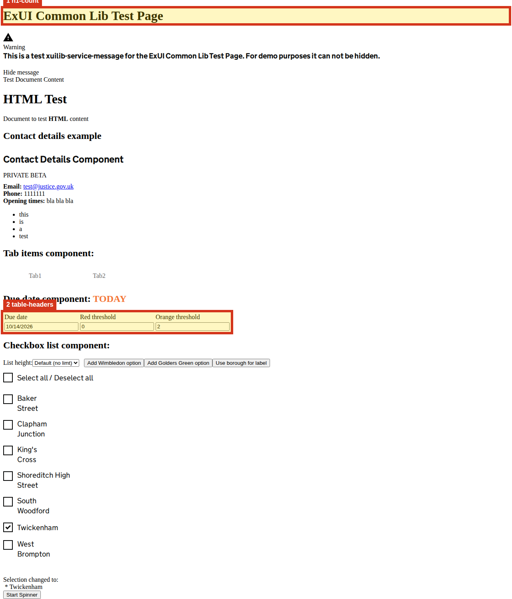

Show highlighted page image

1. h1-count
Expected exactly one visible h1, found 2.
Selector: h1
Developer advice
Heading convention — inspect the page hierarchy
Where to look
- Page
- http://localhost:4200/home
- Selector
h1- Element
h1- Name hint
- ExUI Common Lib Test Page
- Landmark
- main
- Why this matters
- Heading navigation helps screen-reader users understand the page and locate its main subject.
- What to fix
- Check all page headings, including shared banners. Follow the GOV.UK convention of one main page h1; choose other levels by section hierarchy, not visual size. Multiple h1 elements alone do not establish a WCAG failure.
- How to verify
- Inspect every h1 and navigate the heading list with a screen reader. Confirm the main heading identifies this page state and section levels reflect the content.
- Guidance
- W3C WAI: page headings
- Related WCAG criteria
- GOV.UK heading convention; not a standalone WCAG failure. Review 1.3.1 (A) and 2.4.6 (AA) in context. Criteria refer to WCAG 2.2; unless noted, they also existed in WCAG 2.0.
DOM hints and source investigation
search selector h1
These are rendered DOM clues, not a verified source-file mapping. Match the selector and nearby text in the route component/template. The excerpt may be truncated.
{
"tag": "h1",
"angularAttrs": "_ngcontent-ng-c371440104",
"accessibleName": "ExUI Common Lib Test Page",
"nearestLandmark": "main"
}Captured DOM excerpt
<h1 _ngcontent-ng-c371440104="">ExUI Common Lib Test Page</h1>
2. table-headers
Data tables should expose row or column headers.
Selector: table
Developer advice
Table structure heuristic — confirm this is a data table
Where to look
- Page
- http://localhost:4200/home
- Selector
table- Element
table- Name hint
- Due dateRed thresholdOrange threshold
- Nearby heading
- h2: Due date component: TODAY
- Landmark
- main
- Why this matters
- Users navigating table cells need the associated row and column context.
- What to fix
- Add th scope="col"/scope="row" or equivalent row/column header roles for data tables.
- How to verify
- Inspect header associations and navigate data cells with a screen reader; use layout markup instead if this is not tabular data.
- Guidance
- W3C WAI: accessible tables
- Related WCAG criteria
- Related: 1.3.1 (A). Verify data-cell header relationships. Criteria refer to WCAG 2.2; unless noted, they also existed in WCAG 2.0.
DOM hints and source investigation
search selector table; check template near h2: Due date component: TODAY
These are rendered DOM clues, not a verified source-file mapping. Match the selector and nearby text in the route component/template. The excerpt may be truncated.
{
"tag": "table",
"angularAttrs": "_ngcontent-ng-c371440104",
"accessibleName": "Due dateRed thresholdOrange threshold",
"nearestHeading": "h2: Due date component: TODAY",
"nearestLandmark": "main"
}Captured DOM excerpt
<table _ngcontent-ng-c371440104=""><tr _ngcontent-ng-c371440104=""><td _ngcontent-ng-c371440104="">Due date</td><td _ngcontent-ng-c371440104="">Red threshold</td><td _ngcontent-ng-c371440104="">Orange threshold</td></tr><tr _ngcontent-ng-c371440104=""><td _ngcontent-ng-c371440104=""><input _ngcontent-ng-c371440104="" type="text" aria-label="Due date" style=""></td><td _ngcontent-ng-c371440104=""><input _ngcontent-ng-c371440104="" type="number" aria-label="Red threshold" style=""></td><td _ngcont